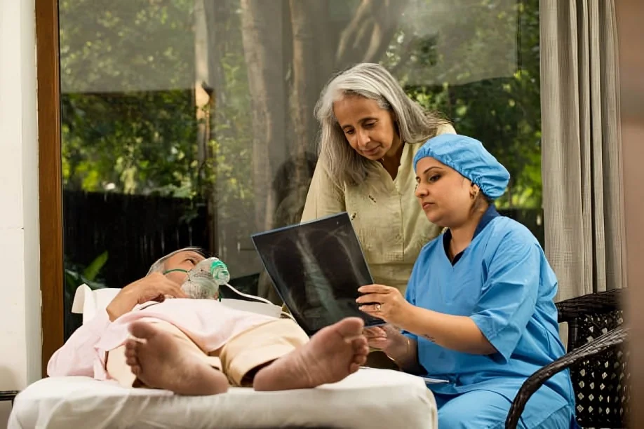

Ashok Healthcare · Bangalore
Home Care Blog & Guides
Read practical home healthcare guides for families in Bangalore, including bedside care, equipment safety and recovery at home. Articles offer general education and do not replace advice from the patient's treating clinician.

Airway careTracheostomy Care at Home: Safety Guidelines for Families
Understand everyday precautions, the role of trained clinicians, and warning signs that need urgent attention.
Read the guideCatheter Care at Home: Safety & Hygiene in Bangalore
Learn general precautions for the drainage system, signs of possible complications, and when to contact a nurse or doctor.
Read the guideBedsore Prevention at Home: A Family Guide
Learn how families can discuss skin checks, repositioning plans, moisture care and warning signs with a clinician.
Read the guideOxygen Concentrator Safe Use at Home
Review prescription-led use, room setup, fire prevention, alarms and backup planning for home oxygen equipment.
Read the guidePost-Stroke Home Exercises: Planning Safe Practice
Understand why a therapist-led plan, safe practice space and recognition of emergency signs matter.
Read the guideCaring for a Bedridden Patient at Home
Plan daily routines, safe movement, communication, skin care and support for family caregivers.
Read the guideHome Nurse vs Attendant: Cost Factors in Bangalore
Compare the factors behind care quotes, including duties, shifts, clinical needs and written terms.
Read the guideWhat to Ask When Hiring a Home Nurse in Bangalore
Use practical questions to discuss credentials, responsibilities, handovers, escalation and service terms.
Read the guide